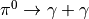

hazma.decay.neutral_pion¶
-
hazma.decay.neutral_pion(eng_gam, eng_pi)¶ Compute dNdE from neutral pion decay.
Compute dNdE from decay  in the laborartory frame given a gamma ray engergy of
eng_gamand neutral pion energy ofeng_pi.Parameters: - eng_gam (double or numpy.ndarray) – Gamma ray energy(ies) in laboratory frame.
- eng_pi (float) – Neutral pion energy in laboratory frame.
Returns: spec – List of gamma ray spectrum values, dNdE, evaluated at eng_gams given neutral pion energy eng_pi.
Return type: np.ndarray
Examples
Calculate spectrum for single gamma ray energy
>>> from hazma import decay >>> eng_gam, eng_pi = 200., 1000. >>> spec = decay.neutral_pion(eng_gam, eng_pi)
Calculate spectrum for array of gamma ray energies
>>> from hazma import decay >>> import numpy as np >>> eng_gams = np.logspace(0.0, 3.0, num=200, dtype=float) >>> eng_pi = 1000. >>> spec = decay.neutral_pion(eng_gams, eng_pi)